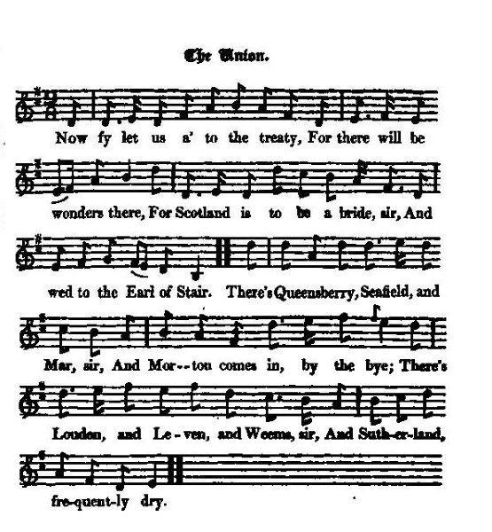

The Union
L'union
The Act of Union 17th January 1707
Tune - Mélodie"Come fye let us a' to the Bridal"
from Hogg's "Jacobite Reliques" part I, N°40
Sequenced by Christian Souchon
|
To the tune:
James Hogg gives no particulars concerning this tune. There's no end of names for it, whose general meaning is ""Let us all go to the wedding": - "The Blithsom Bridal" in William Thomson's "Orpheus Caledonius", 1725. - "Duty and Part of Reason", the song N°16 in Allan Ramsay's "Gentle Shepherd" (1725) which is to be sung to the previous tune, -"An the Kirk wad let me be" in McGibbon's "Scots Tune Book" vol. 1, P. 18-19, c. 1762, - "Silly Old Man" in William Wicker's MS Collection of Northumberland tunes, 1770, - "Blithesome Bridal" in Johnson's "Scots Musical Museum" vol 1, N°58 , 1788, - "Let us waa (=away) to the Wedding" in O'Farrell's "Pocket Companion, p.97, 1806. - "I'm the Boy for bewitching them" in Elias Howe's "A Thousand Jigs and Reels", c. 1867. - "The Jolly Peddler" in Ryan's "Mammoth Collection" p.105, 1883, etc. Source "The Fiddler's Companion" (cf. Links). The "Blithsom Bridal" in "Orpheus Caledonius" goes: Come fye let us a' to the Bridal For there'll be Lilting there. For Jock' ll be married to Maggie The lass with the gowden hair. (twice) And there will be langkail and pottage And bannocks and barley meal. And there will be good sour herring To relish a cog of good ale (twice)... followed by a long enumeration of picturesque characters going to the wedding. The Jacobite song parodies these lyrics. |
 |
A propos de la mélodie:
James Hogg ne donne aucun détail au sujet de cette mélodie qui existe sous toutes sortes de noms qui signifient tous "Rendons-nous tous à la noce!": - "Blithesome Bridal" chez William Thomson, "Orpheus Caledonius", 1725, - "Duty and Part of Reason", chant N°16 chez Allan Ramsay, "Gentle Shepherd" (1725) (sur la mélodie précédente), - "An the Kirk wad let me be" chez McGibbon, "Scots Tune Book" vol. 1, P. 18-19, c. 1762, - "Silly Old Man" chez William Wicke, Collection de manuscrits du Northumberland, 1770? etc. - "Blithesome Bridal" dans le "Scots Musical Museum" de Johnson, vol 1, N°58, 1788, - "Let us waa (=away) to the Wedding" chez O'Farrell, "Pocket Companion, p.97, 1806. - "I'm the Boy for bewitching them" chez Elias Howe, "A Thousand Jigs and Reels", c. 1867. - "The Jolly Peddler" chez Ryan, "Mammoth Collection" p.105, 1883, Source "The Fiddler's Companion" (cf. Liens). Le "Joyeux mariage" de l'"Orpheus Caledonius" commence ainsi: Rendez-vous tous à la noce, amis; Il y aura des chansons. C'est Jock qui doit épouser Maggie Charmante fille aux cheveux blonds. (bis) Il y aura des gâteaux d'avoine Et d'orge en grande quantité, Choux, potage, bons harengs saurs, Et un fût de bière à savourer (bis)... suit une longue énumération des personnages pittoresques qui vont à la noce. Le chant Jacobite parodie ce texte. |

|
THE UNION.
1. Now fy let us a' to the treaty, For there will be wonders there, For Scotland is to be a bride, sir, And wed to the Earl of Stair. (twice) Three's Queensberry, Seafield, and Mar, sir, * And Morton comes in by the bye; There's Loudon, and Leven, and Weems, sir, And Sutherland, frequently dry. (twice) 2. There's Roseberry, Glasgow, and Duplin, And Lord Archibald Campbell, and Ross ; The president, Francis Montgomery, Wha ambles like any paced horse. There's Johnstoun, Dan Campbell, and Ross, lad, Whom the court hath had still on their bench; There's solid Pitmedden and Forgland, Wha design'd jumping on to the bench. 3. There's Ormistoun and Tillicoultrie, And Smollett for the town of Dumbarton; There's Arniston, too, and Carnwathie, Put in by his uncle, L. Wharton ; There's Grant, and young Pennicook, sir, Hugh Montgomery, and Davy Dalrymple; There's one who will surely bear bouk, sir, Prestongrange, who indeed is not simple. 4. Now the Lord bless the jimp one-and-thirty, If they prove not traitors in fact, But see that their bride be well drest, sir, Or the devil take all the pack. May the devil take all the hale pack, sir, Away on his back with a bang; Then well may our new-buskit bridie For her ain first wooer think lang. Source: Jacobite Minstrelsy, published in Glasgow by R. Griffin & Cie and Robert Malcolm, printer in 1828. |
L'UNION
1. Amis, fêtons le traité d'union Il réserve bien des surprises! C'est un mariage avec le Comte de Stairs. L'Ecosse est sa promise. (bis) Viendront Queensberry, Seafield et Mar Et Morton, soit dit en passant, Et Loudon et Leven et Weems Sutherland, au gosier languissant. (bis) 2. Avec Roseberry, Glasgow, Duplin Lord Archibald Campbell et Ross, Le Président Montgoméry, docile Comme une brave rosse.- Avec Johnstoun, Dan Campbell et Ross, Que l'on a chassés du prétoire, Les bons Pitmeden et Forgland Que l'on a priés de s'y asseoir. 3. Avec Ormistoun, Tillicoutrie Avec Smolett de Dumbarton; Et Arniston et Carnwathie parrainé Par son oncle et Wharton; Avec Grant, et Pennicock junior Montgomery, Davy Dalrymple, Quelqu'un qui va peser dans la Balance, le fameux Prestongrange. 4. Dieu garde ces trente-et-un messieurs De ne jamais se compromettre! Qu'ils aillent au diable, si la mariée n'a Pas de mise coquette! Oh, puisse alors le diable emporter Sur son dos ce tas de gredins; Vêtue de neuf, la fiancée Retourner vers son époux ancien! (Trad. Christian Souchon(c)2009) |
|
[1]
Queennsberry
had been created a Duke by James II., but nevertheless supported the interests of the Prince of Orange, and took the lead in promoting the union.
[2] Seafield , son to the Earl of Findlater; was bred a lawyer, and at the convention in 1689. supported the cause of King James, but was afterwards brought over by the Duke of Hamilton to the interest of William, and in 1696 was made one of his secretaries of state. He was selfish, mean, and proud ; and when the treaty of union, which terminated the independence of Scotland as a kingdom, was carried, he is said to have exclaimed, " There is the end o' an auid sang!" This wanton insult to his country was not overlooked. His brother. Captain Ogilvie, who was a considerable farmer and cattle dealer, being reproved by him for engaging in a profession so mean, is said to have retorted, " True, brother, I dinna flee sae high as you, but we maun balth do as we dow—I only sell nowl, but ye sell nations". The other characters mentioned in this song are sufficiently known by their names; but of the part some of them took in bringing about that event, no notice is taken by any of the annalists of that period. Notes copied from "Jacobite Minstrelsy" |
[1]
Queennsberry
avait été fait duc par Jacques II, ce qui ne l'empêcha pas d'épouser la cause du Prince d'Orange et de prendre la tête du mouvement en faveur de l'union des royaumes.
[2] Seafield , fils du Comte de Findlater, avait fait des études de droit et à la convention de 1689 il avait défendu le roi Jacques. Puis il fut gagné à la cause de William par le Duc de Hamilton et en 1696 devint l'un de ses secrétaires d'état. C'était un égoïste, un médiocre et un vaniteux. Une fois adopté le traité d'Union qui mettait fin à l'indépendance de l'Ecosse en tant que royaume distinct, on dit qu'il déclara: "La vieille chanson est terminée!" Cette insulte gratuite à sa nation ne passa pas inaperçue. Son frère, la capitaine Ogilvie, qui était un fermier et un maquignon bien connu, à qui il reprochait d'exercer une profession si prosaïque, lui rétorqua, dit-on: "C'est vrai, mon frère, je ne vole pas aussi haut que vous, mais nous devons tous les deux faire de notre mieux: moi, je vends des bestiaux, vous, vous vendez des nations." Les autres personnages mentionnés dans ce chant sont connus de nom. Mais la chronique de l'époque n'a rien retenu du rôle qu'ils jouèrent dans l'avènement de l'Union. Notes tirées de "Jacobite Minstrelsy" |
|
|
|